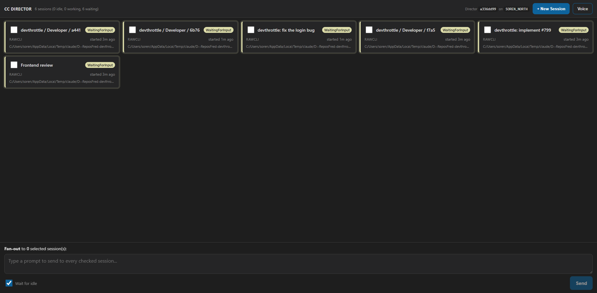

Developer Agent proof. Branch issue-800-session-names.
Build: dotnet build cc-director.sln -> Build succeeded. 0 Warning(s), 0 Error(s).
Live proof captured against an isolated test Director (slot 14, Control API http://127.0.0.1:7880),
launched via its own scheduled task per CLAUDE.md rule 0b.
SessionName in CcDirector.Core/Sessions/SessionName.cs:
Compose(folder, type, explicitName, purpose, disambiguator), IsWeakExplicitName,
DisplayName, FolderName, Disambiguator. It is the one place the naming rule lives.NewSessionRequest gains optional Name and Purpose fields
(CcDirector.Gateway.Contracts).SessionManager.CreateSession takes an optional
Func<Guid,string> nameFactory; the new session's CustomName is set in the create call,
not by a later rename. The id is passed so the name can carry an id-derived disambiguator (no new persisted state).CustomName on the new session before returning 201.ControlEndpoints.cs ~231 and ~256,
SessionManager.cs ~322 (plus the same pattern in the voice endpoint ~1538) now route through
SessionName.DisplayName.session spawn gains --purpose (forwarded to the new
Purpose field), keeps --name, and prints a warning when NEITHER is supplied.fleet-comms skill spawn examples lead with --name/--purpose
and state the always-name-your-session norm.SessionNameTests (15 cases) cover passthrough, purpose composition, type+disambiguator
default, weak-name rejection, and disambiguator-distinctness.req.Name supplied) that is blank or equals (case-insensitive) the bare folder name is rejected with HTTP 400.
An ABSENT name (req.Name == null) is auto-composed from folder + purpose, else folder + type + disambiguator,
so a session can never display as the bare folder name alone.| Criterion | Expected | Actual (proof) | Result |
|---|---|---|---|
New Name/Purpose fields, solution builds clean |
Fields present; dotnet build cc-director.sln clean |
Fields added to NewSessionRequest; build succeeded, 0 warnings, 0 errors |
PASS |
Explicit Name -> 201, name verbatim |
HTTP 201, name == "Frontend review" |
HTTP 201, name = "Frontend review" (v1-explicit-name.json) |
PASS |
Blank Name -> 400 |
HTTP 400 telling caller to give a meaningful name/purpose | HTTP 400: "Provide a meaningful session name or a purpose..." (v2-blank-name-400.json) |
PASS |
Name == bare folder -> 400 |
HTTP 400 | HTTP 400, same message, folder "devthrottle" named (v3-folder-name-400.json) |
PASS |
No Name but a Purpose -> 201, folder + purpose, not bare folder |
name contains folder AND purpose | HTTP 201, name = "devthrottle: implement #799" (v4-purpose-only.json) |
PASS |
| Neither -> 201, folder + type + disambiguator, not bare folder | name has folder + type + disambiguator | HTTP 201, name = "devthrottle / Developer / f7a5" (v5a-neither.json) |
PASS |
| Two same-repo sessions, neither named -> DISTINCT names | names differ | "devthrottle / Developer / f7a5" vs "devthrottle / Developer / a441" (v5a/v5b) - distinct |
PASS |
| No naming path returns the bare folder name as the whole name | former fallbacks go through the single composer | Call sites in composer-callsites.txt: ControlEndpoints 233/259/1541/2778/2796, SessionManager 336.
The only remaining Path.GetFileName(repoPath...) is ProjectNameOf (a project-grouping label, not the session identity name) |
PASS |
CLI: spawn with neither flag warns; --purpose includes purpose in name |
warning printed; name includes purpose | Warning printed; "devthrottle / Developer / 6b76" (no flags) and "devthrottle: fix the login bug" (--purpose)
(cli-spawn-output.txt) |
PASS |
Unit tests for SessionName.Compose cover the listed cases |
passthrough, purpose, type+disambiguator default, weak-name rejection, disambiguator-distinctness | 15 tests passed (unit-test-run.txt) |
PASS |
session list shows two same-repo sessions with distinct meaningful names (screenshot) |
distinct, meaningful names in same repo | 6 same-repo "devthrottle" sessions, all distinct (screenshot below) | PASS |
Variant 1 - explicit Name: HTTP 201 name = "Frontend review"
Variant 2 - blank Name: HTTP 400 "Provide a meaningful session name or a purpose: a blank name or
the bare repository folder name (\"devthrottle\") is not allowed."
Variant 3 - Name == folder: HTTP 400 (same message)
Variant 4 - Purpose only: HTTP 201 name = "devthrottle: implement #799"
Variant 5a - neither: HTTP 201 name = "devthrottle / Developer / f7a5"
Variant 5b - neither (2nd): HTTP 201 name = "devthrottle / Developer / a441" (DISTINCT from 5a)
Raw responses: v1-explicit-name.json, v2-blank-name-400.json, v3-folder-name-400.json,
v4-purpose-only.json, v5a-neither.json, v5b-neither-2.json.
=== spawn NEITHER --name nor --purpose (expect warning) === Warning: no --name or --purpose given; the session will get an auto-composed name. Pass --purpose "<what it is for>" so it is easy to tell apart. Opened session 6b76f01c (devthrottle / Developer / 6b76). === spawn with --purpose 'fix the login bug' (expect name includes purpose) === Opened session f1288d70 (devthrottle: fix the login bug).
Full output: cli-spawn-output.txt. Session list text: cli-session-list.txt.
The test Director's session list. All six sessions are in the SAME repository ("devthrottle"), each with a distinct, meaningful name composed at birth - none is the bare folder name.

Passed! - Failed: 0, Passed: 15, Skipped: 0, Total: 15 - CcDirector.Core.Tests.dll
No architecture or security drift. The change adds a pure helper and two optional contract fields within the
existing containers (gateway_contracts, core_services, control_api, cc-devthrottle);
it introduces no new container, no new persisted state (the disambiguator is derived from the session id), and touches
no blocking security rule. The new HTTP 400 path is input validation that fails loud, consistent with the no-fallback rule.
I believe this is finished. Every acceptance criterion is met with the proof above, the solution builds clean with zero warnings, and all 15 new unit tests pass.